Як виглядає акаунт у цифрах
Метрики за попередній місяць роботи — органічне охоплення, що тримається на системному контенті, а не на разових сплесках.
- 1 302 675 переглядів акаунту (26,8% з реклами)
- 195 192 охоплених облікових записів
- 16 536 відвідувань профілю
- медіанні перегляди сторіс — 4 300
- медіанні перегляди постів — 18 600
- медіанні перегляди рилзів — 14 000
Реальні цифри з акаунту
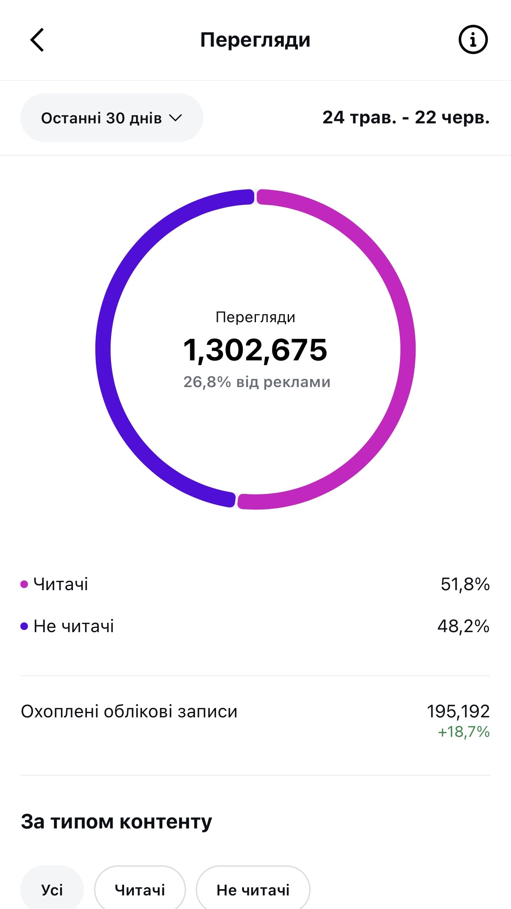
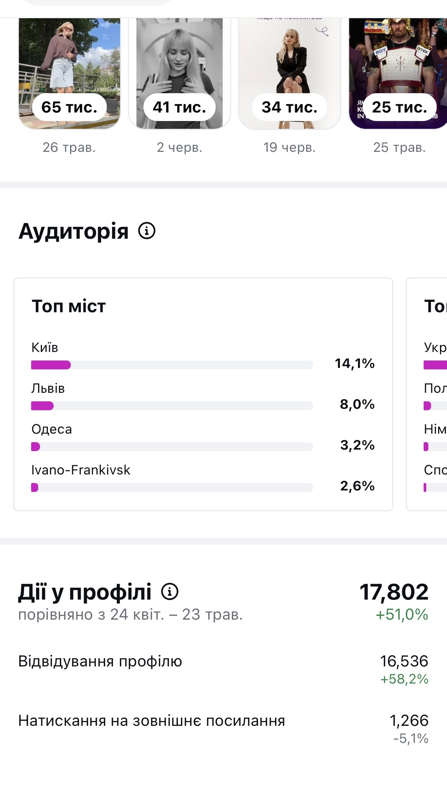
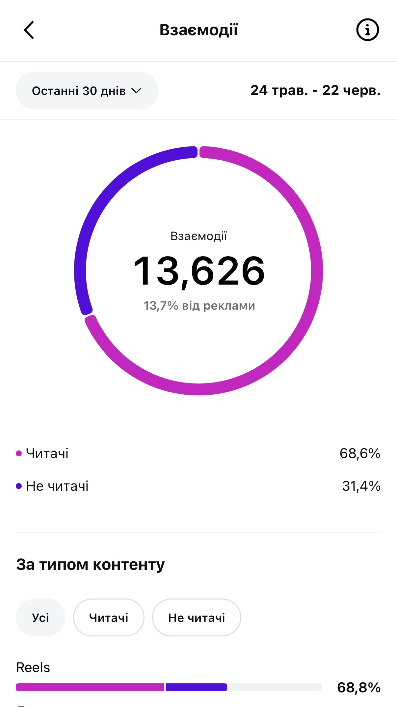
Школа з чудовим контентом, але без системи просування
AK School — школа англійської мови, побудована на особистому бренді власниці Анастасії. Коли ми починали співпрацю, акаунт вже мав стабільний контент. Проте не вистачало системи — шапка профілю без УТП і заклику, в акаунті не було рубрикатора, а контент не працював на конкретні цілі бізнесу.
Запит був комплексним:
- збільшити впізнаваність школи
- підняти лояльність до бренду
- залучати лідів — потенційних студентів школи
- перетворювати інтерес у реальних клієнтів
Спочатку — упакувати, потім масштабувати
Ми почали з фундаменту: розробили контент-стратегію та контент-план із чітким рубрикатором, сформували позиціонування й УТП школи та допрацювали фірмовий стиль — оновили візуал, оформлення сторіс і актуальні. Профіль був підготовлений до просування таргетованою рекламою.
Основою акаунту став відеоконтент, який показує школу з найкращого боку — реальні шматочки уроків, життя власниці та корисна англійська для щодення.
Трафік: контент працював, але його бачили не всі
Попри якісний контент, основною проблемою залишалися охоплення. Контент працював, але його бачила недостатня кількість людей для того, аби досягати поставлених цілей.
Саме тому було прийнято рішення запустити TikTok як додатковий канал залучення аудиторії. Власниця школи вела його самостійно та створювала більшу частину контенту, а ми періодично допомагали з окремими відео.
5 мільйонів переглядів і потік теплої аудиторії
TikTok став головним відкриттям проєкту. Завдяки правильній контент-стратегії він перетворився на потужне джерело безкоштовного трафіку: майже після кожного відео відбувався «перегін» аудиторії в Instagram — ці люди не просто заходили подивитись, а лишались і продовжували стежити за школою.
Рекорд — 5 мільйонів переглядів на одне відео. Акаунт швидко виріс до 45 тисяч+ підписників. Почали приходити перші запити на співпрацю та заняття — у тому числі від популярних блогерів.
💡 Найкращі заявки в директі пішли саме після активного постингу в TikTok — віральне відео працювало як вершина воронки, а Instagram утримував і прогрівав аудиторію.
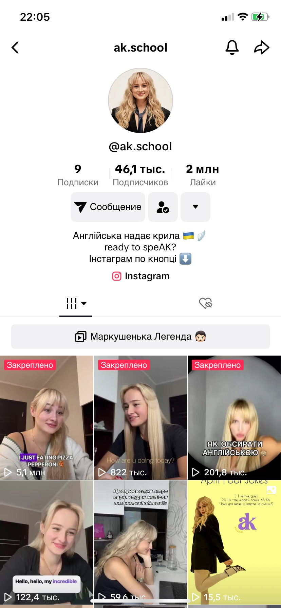
Зростити особистий бренд у бренд цілої команди
На старті все трималося на особистості Анастасії. Але школа — це команда викладачів, і аудиторії важливо було побачити, що за навчанням стоїть не одна людина. Виникала навіть характерна проблема «Я хочу на заняття лише до Анастасії».
Ми поступово й плавно розширювали акцент з особистого бренду на всю команду — вводили нові обличчя, візитівки викладачів, EGC-контент. Завдяки м'якому переходу активність не просто збереглась, а й зросла. Додатково, аби підкреслити преміальність школи, ми оновили фірмовий стиль.
Оновлений фірмовий стиль
Було
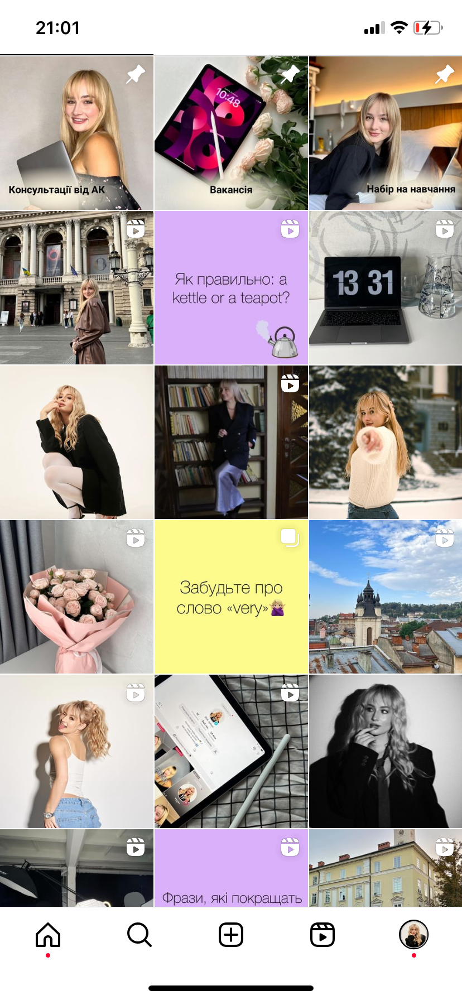
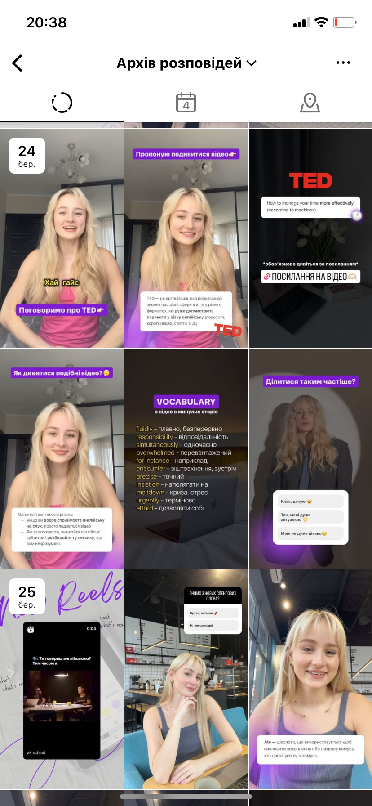
Стало

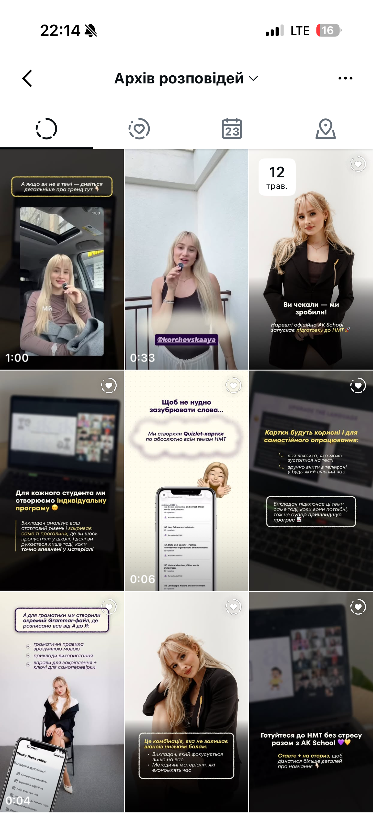
Контент-машина, що працює на ліди й довіру
Упаковка та позиціонування
Контент-стратегія з чітким рубрикатором, УТП школи, виправлена шапка профілю, оновлений фірмовий стиль і оформлення акаунту.
TikTok як джерело трафіку
Безкоштовний трафік і постійний перегін теплої аудиторії в Instagram.
Корисний контент про щоденну англійську
Daily English, незвичні асоціації, пояснення правил, тести на перевірку рівня — формати, які найкраще конвертують у підписки й зберігання.
Реальні фрагменти занять
Уроки з Анастасією та викладачами найкраще показують процес навчання й працюють на лояльність.
Команда у контенті
Візитівки викладачів, EGC-контент, кейси й відгуки студентів будують довіру до школи як до системного проєкту.
Масштабна звітність
Розбір контенту, створення гіпотез і масштабування того, що працює.
Жива система, що росте
Школа отримала керовану систему просування, яка не зупиняється. Запуск TikTok дав вибуховий старт, а за роки роботи вибудувалась повноцінна контент-машина: органіка, впізнаваний бренд та стабільний потік заявок на послуги.
Щоб покращувати результати та експериментувати з контентом, ми постійно тестуємо нові формати — ситуативний контент, пробні рилзи та інші підходи, які підсилюють органічне охоплення.
Як виглядає акаунт сьогодні
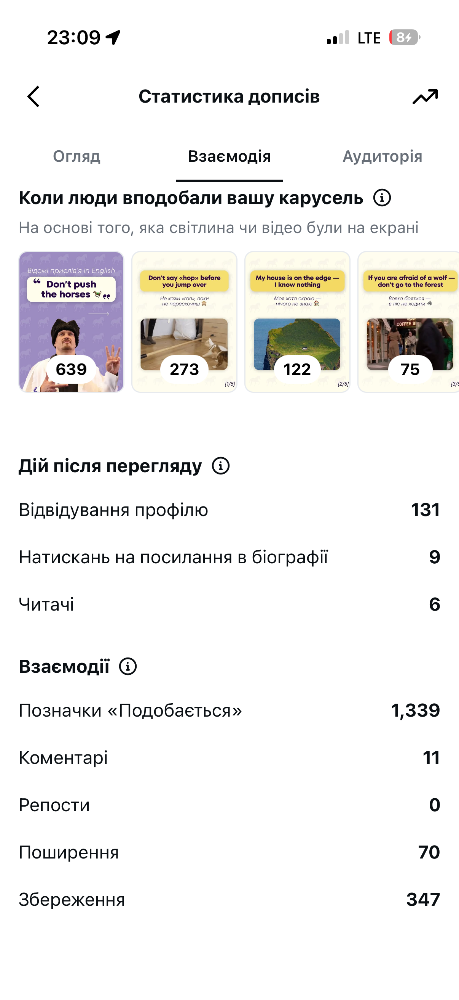

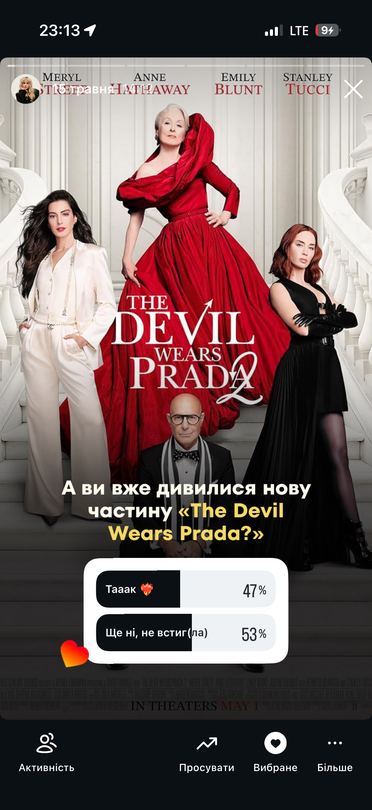
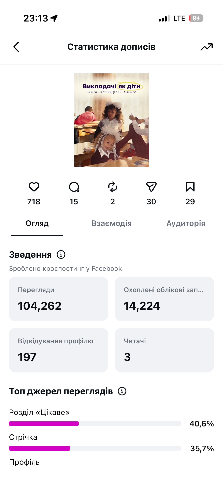
Не перегляди заради переглядів, а контент, що веде до дій
Щоб розуміти, який контент реально працює на бізнес, ми ведемо регулярну звітність:
- розбираємо, які формати набирають охоплення, а які приводять реальні заявки
- відстежуємо, яку кількість аудиторії ми отримуємо
- порівнюємо показники з минулим звітним періодом, щоб бачити динаміку
- пропонуємо нові гіпотези на основі результатів і тестуємо їх у наступному періоді
Це дозволяє не гнатися за переглядами заради переглядів, а концентрувати увагу на контенті, що веде аудиторію до цільових дій.
Масштаб нашої звітності
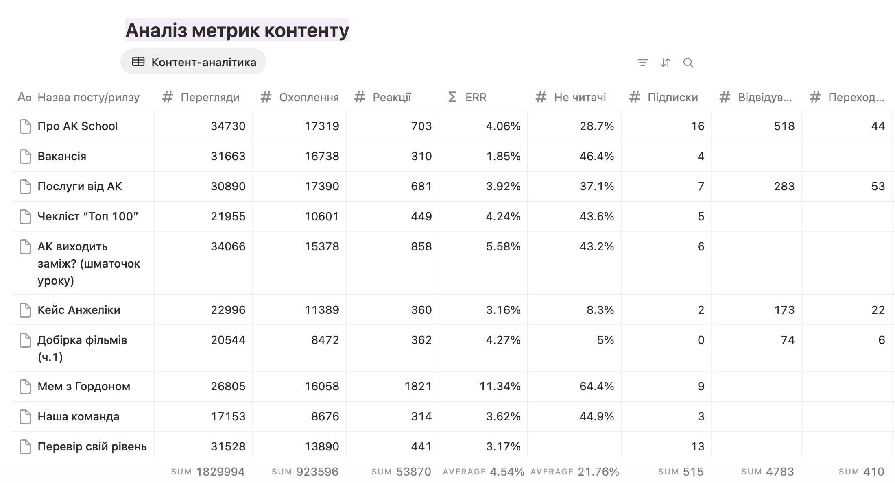
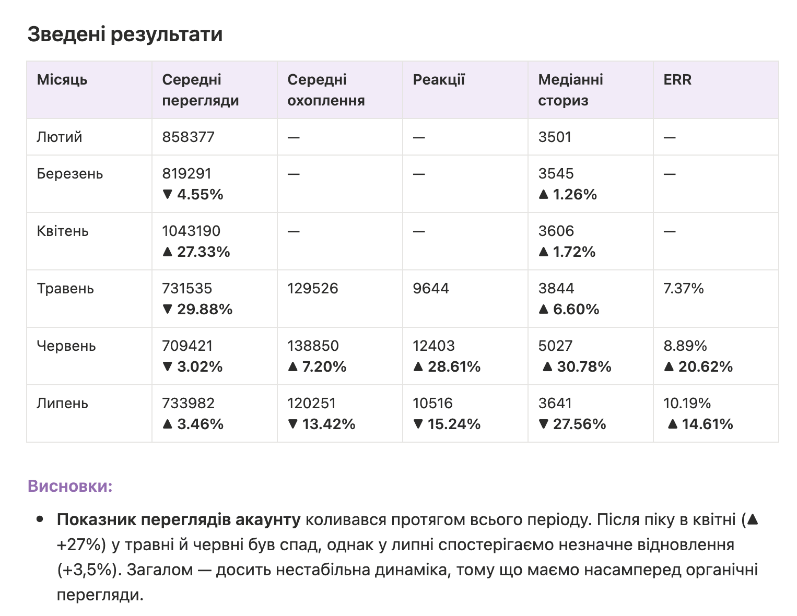
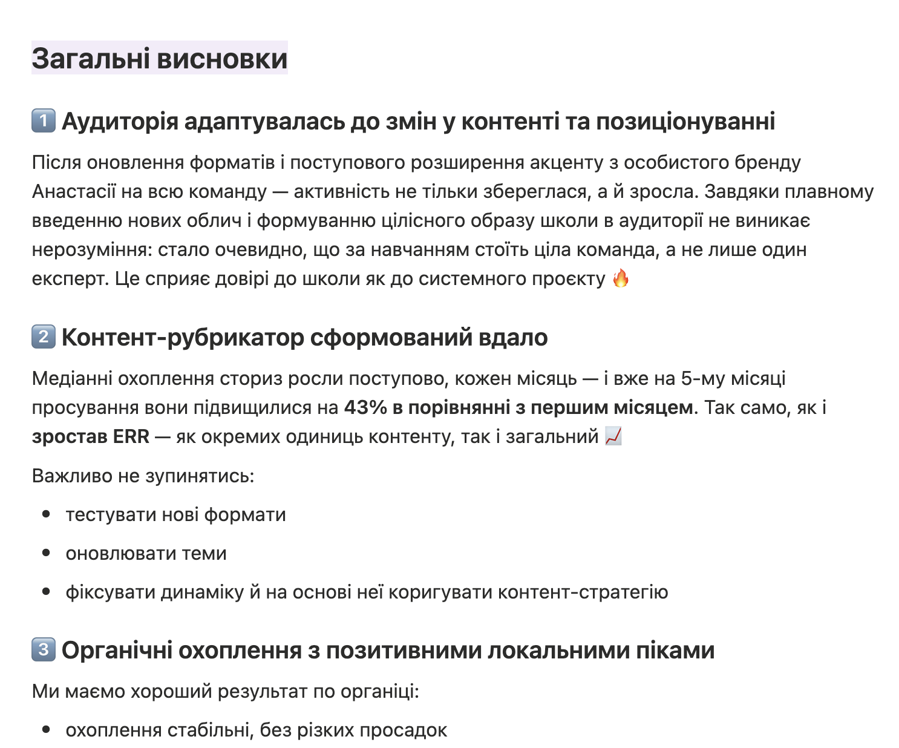
Цей кейс — про те, як за роки системної роботи особистий бренд однієї людини перетворюється на впізнаваний бренд школи з власною контент-машиною. Органіка, що дає мільйонні охоплення, і звітність, що тримає фокус на бізнес-цілях, — це не везіння, а керована система.